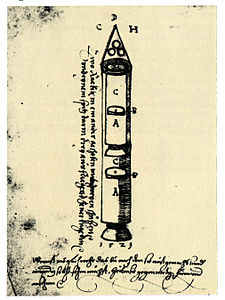

Космические ракеты | |
| ССЫЛКА НА 2 СТРАНИЦУ |
Первые ракеты Существует предположение, что некое подобие ракеты было сконструировано ещё в Древней Греции. Речь идёт о летающем деревянном голубе Архита Тарентского (др.-греч. Ἀρχύτας ὁ Ταραντίνος). Его изобретение упоминается в произведении древнеримского писателя Авла Геллия (лат. Aulus Gellius) «Аттические ночи» (лат. «Noctes Atticae»). В книге говорится, что птица поднималась с помощью разновесов и приводилась в движение дуновением спрятанного и скрытого воздуха. До сих пор не установлено, приводился ли голубь в движение действием воздуха, находящегося у него внутри, или воздуха, который дул на него снаружи. Остаётся неясным, как Архит мог получить сжатый воздух внутри голубя. В античной традиции пневматики нет аналогов такого использования сжатого воздуха[1]. Истоки возникновения ракет большинство историков относят ко временам китайской династии Хань (206 год до н. э. — 220 год н. э.), к открытию пороха и началу его использования для фейерверков и развлечений. Сила, возникающая при взрыве порохового заряда, была достаточной, чтобы двигать различные предметы. Позже этот принцип нашёл применение при создании первых пушек и мушкетов. Снаряды порохового оружия могли летать на далёкие расстояния, однако не были ракетами, поскольку не имели собственных запасов топлива. Тем не менее, именно изобретение пороха стало основной предпосылкой возникновения настоящих ракет. Описание летающих «огненных стрел», применявшихся китайцами, показывает, что эти стрелы были ракетами. К ним прикреплялась трубка из уплотнённой бумаги, открытая только с заднего конца и заполненная горючим составом. Этот заряд поджигался, и затем стрела выпускалась с помощью лука. Такие стрелы применялись в ряде случаев при осаде укреплений, против судов, кавалерии[2]. В XIII веке вместе с монгольскими завоевателями ракеты попали в Европу, и в 1248 г. английский философ и естествоиспытатель Роджер Бэкон опубликовал труд по их применению[3]. Многоступенчатые ракеты были описаны в XVI веке Конрадом Хаасом и в XVII веке белорусско-литовским военным инженером Казимиром Семеновичем. Фейерверки и зажигательные ракеты производились в России начиная с XVII века |